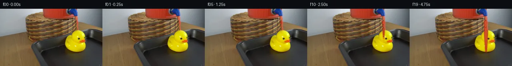

![首帧]()

Round 00
2026-11-05T19:35:45.283219+00:00像素候选变化代码 +427/−0inspection 更新
pixels 8af39ca3885b8647 · code 45a676233d16014c
查看本轮 generate.py 真实 diff
--- previous/generate.py
+++ current/generate.py
@@ -0,0 +1,427 @@
+#!/usr/bin/env python3
+"""generate.py — Red liquid pouring animation on yellow rubber duck.
+
+Physics-based particle simulation with gravity, surface flow, splashing,
+and pooling. Pure NumPy + PIL, no external engines.
+
+Method: Particle system with gravity and surface adhesion.
+ - Particles spawn at the dispenser spout each frame.
+ - Gravity pulls them downward; they accelerate over time.
+ - On hitting the duck surface (yellow mask), particles stick and
+ slide down the surface contour.
+ - On reaching the tray, particles pool and spread outward.
+ - A persistent accumulation buffer tracks where liquid has been.
+ - Each frame overlays red liquid onto the base image with alpha
+ blending for realistic thin-film appearance.
+"""
+
+import numpy as np
+from PIL import Image
+from pathlib import Path
+import sys
+
+# ---------------------------------------------------------------------------
+# Constants
+# ---------------------------------------------------------------------------
+W, H = 256, 144
+FPS = 4
+N_FRAMES = 20
+CASE_DIR = Path(__file__).parent
+
+# Red liquid base colour (bright red, matches dispenser contents)
+LIQUID_RGB = np.array([178, 48, 24], dtype=np.float64)
+
+# ---------------------------------------------------------------------------
+# Load base frame
+# ---------------------------------------------------------------------------
+base = np.array(Image.open(CASE_DIR / "first_frame.png"), dtype=np.float64)
+assert base.shape == (H, W, 3), f"Expected (144,256,3), got {base.shape}"
+
+# ---------------------------------------------------------------------------
+# Scene analysis: compute masks and geometry from frame 0
+# ---------------------------------------------------------------------------
+
+def compute_duck_mask(img):
+ """Identify the yellow rubber duck pixels.
+ Duck = bright yellow-orange tones, high R and G, very low B.
+ """
+ r, g, b = img[..., 0], img[..., 1], img[..., 2]
+ # Core yellow: very high R and G, low B
+ core = (r > 160) & (g > 120) & (b < 60) & (r > b + 60)
+ # Extended duck: includes shaded/edge areas
+ extended = (r > 100) & (g > 60) & (r > b + 20) & (g > b + 10)
+ # Combine and clean: keep only the largest connected component
+ # in the expected duck region (X:150-220, Y:50-110)
+ mask = np.zeros((H, W), dtype=bool)
+ mask[50:110, 150:220] = extended[50:110, 150:220]
+ return mask
+
+
+def compute_dispenser_mask(img):
+ """Identify glass dispenser region (glass + red liquid inside)."""
+ r, g, b = img[..., 0], img[..., 1], img[..., 2]
+ # Glass dispenser: light blue-gray glass or reddish content
+ # Upper portion has distinct blue/glass tones
+ glass = (b > 100) & (r < 80) & (g < 100) & (r > 10)
+ # Red liquid inside: high R, lower G and B
+ liquid_inside = (r > 140) & (g < 100) & (b < 70) & (r > g + 40)
+ return glass | liquid_inside
+
+
+def compute_tray_mask(img, duck_mask):
+ """Identify baking tray area below/around duck."""
+ r, g, b = img[..., 0], img[..., 1], img[..., 2]
+ # Tray: dark-metallic horizontal surface below duck
+ # In the bottom region, find the flat-ish surface
+ mask = np.zeros((H, W), dtype=bool)
+ # Below duck area, metallic colors
+ tray_colors = (
+ (r > 40) & (r < 85) &
+ (g > 38) & (g < 75) &
+ (b > 30) & (b < 65) &
+ (np.abs(r.astype(float) - g.astype(float)) < 20)
+ )
+ # Only in the lower portion
+ mask[H//2:, :] = tray_colors[H//2:, :]
+ # Expand: include area under duck
+ duck_ys, duck_xs = np.where(duck_mask)
… diff truncated; 340 more lines …